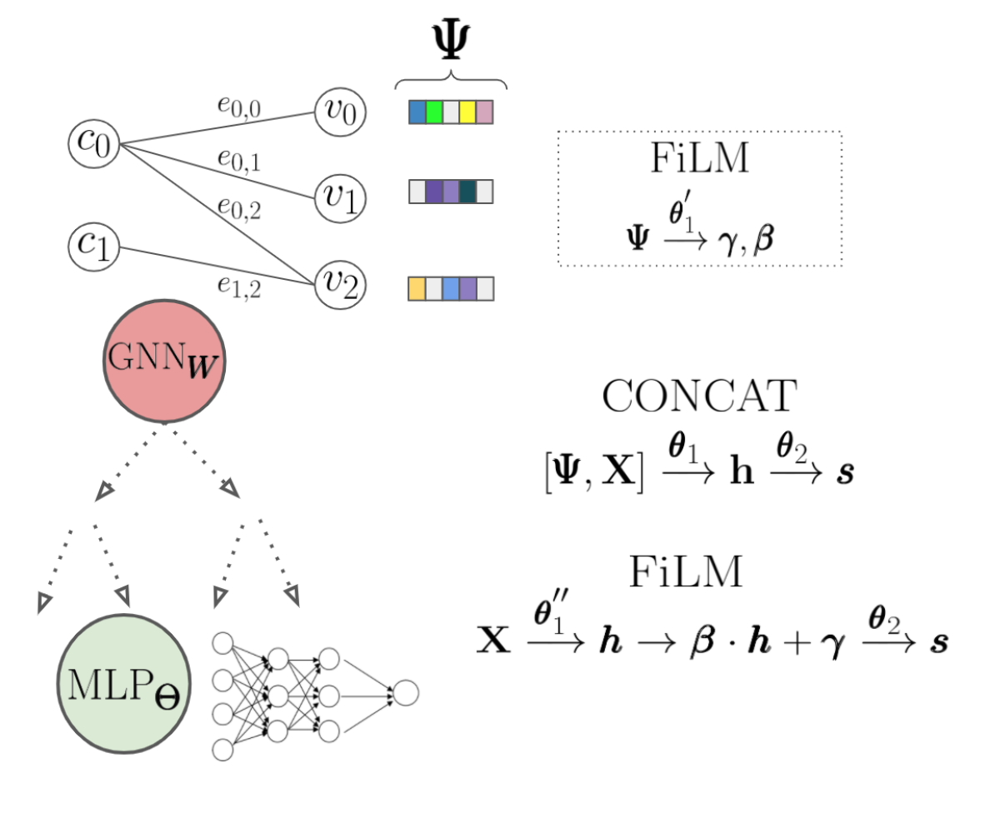
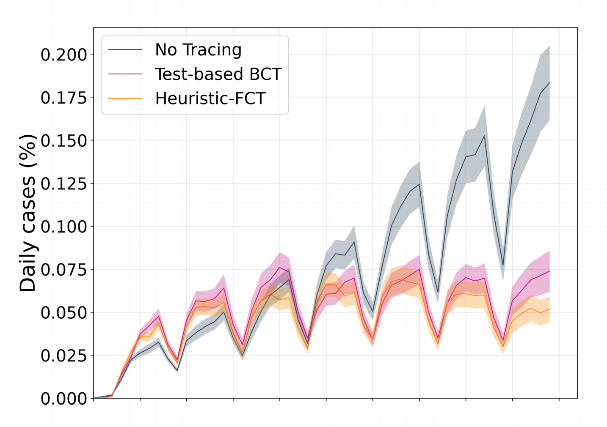
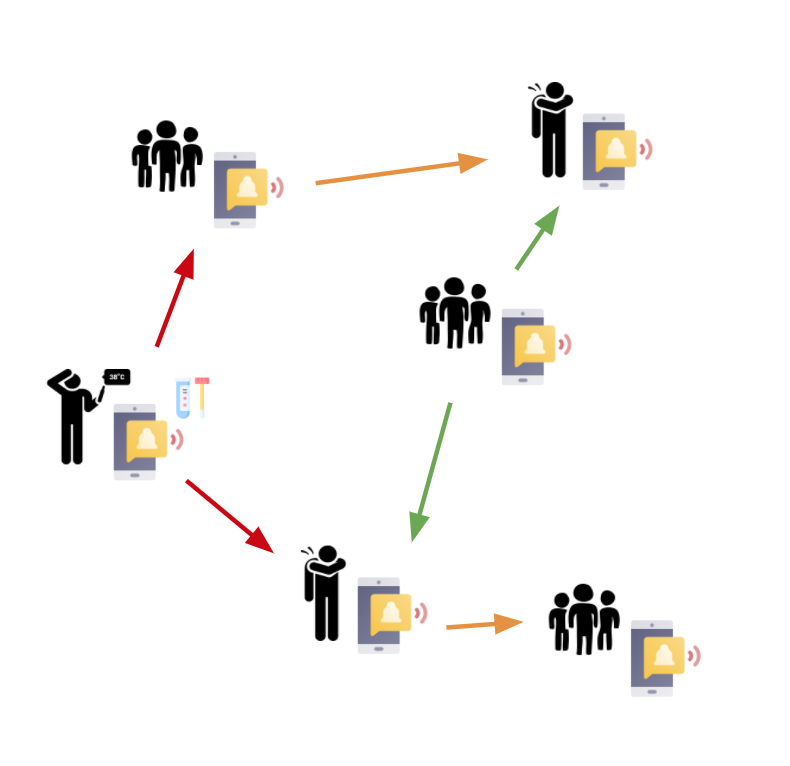
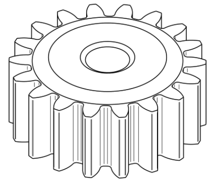

I am a Ph.D. student at the University of Oxford, supervised by Prof. M. Pawan Kumar and co-supervised by Prof. Andrea Lodi and Prof. Yoshua Bengio. My Ph.D. is fully sponsored by The Alan Turing Institute. I have also been fortunate enough to work for a year and a half as a visiting researcher at Montréal Institute of Learning Algorithms (Mila), Montréal, Canada.
My primary research focuses on improving combinatorial optimization using deep learning (e.g., automated heuristics in discrete solvers) or improving deep learning reasoning using optimization layers.
I am also excited about using technology or AI for societally impactful problems. As a result, at the beginning of the pandemic, I, along with several other researchers in various disciplines, took a detour to improve contact tracing applications. Along with defining a peer-to-peer protocol, COVI, necessary to improve decision making in contact tracing applications, we were able to determine a suitable framework to infuse rule-based or machine learning-based decision making in such applications.
Before my Ph.D., I took a broad array of Operations Research courses at Columbia University. I also learned about industrial, manufacturing, and mechanical engineering in my undergraduate courses at IIT Delhi.
| Sept. 2017 - Present |
D.Phil in Engineering Science
University of Oxford | Oxford, United Kingdom The Alan Turing Institute | London, United Kingdom
|
| Sept. 2013 - Feb. 2015 |
M.S. in Operations Research
(3.96/4.00)
Columbia University | New York City, New York
|
| Sept. 2009 - Aug. 2013 |
B.Tech. in Production and Industrial Engineering
(8.69/10.00)
Indian Institute of Technology | New Delhi, India
|
| June 2018 - Oct. 2020 | Research Intern | MILA | Montréal, Canada |
| June 2015 - Sept. 2017 | Data Scientist | GenesisMedia LLC | New York City, U.S |
| Feb. 2015 - June 2015 | Data Scientist | American Express | New York City, U.S |
| May 2014 - Aug. 2014 | R&D Data Scientist Intern | The New York Times | New York City, U.S |
| Jan. 2014 - May 2014 | Machine Learning Intern | Wiser | New York City, U.S (Part-time) |
| May 2012 - Aug. 2012 | Research Intern | Innovation Labs, Tata Consultancy Services | Pune, India |
| 2017 - 2022 |
The Alan Turing Institute Doctoral Scholarship |
| 2009 - 2013 |
Undergraduate scholarships/awards
Roll of Honor, Director’s Merit Award, Color, Blazer, Significant Contribution (Sports) |
| Languages / Tools | C/C++, Python, R, Javascript, vim, git, tmux, bash |
| Frameworks | NumPy, Pandas, PyTorch, SciPy, TensorFlow, SimPy, D3, jQuery, Flask |
| Non-Formal Education |
(2020-2021) Scientific Entrepreneurship, University of Oxford, U.K (based on Harvard Business Cases) (2018) Microsoft Research AI Summer School, Cambridge, U.K (acceptance with funding) (2018) Human-aligned AI Summer School, Prague, Czech Republic (acceptance with funding) |
| Competitions |
(2019) Winner, HKBU Entrepreneurship Pitching Competition, Hong Kong (AI enabled retrospective synthesis for drugs) (2015) Winner, Cornell Tech Hackathon, New York City, U.S(Estimating solar potential using satellite images) (2012) 3rd place, CanSat Competition , Texas, U.S(Design of can-sized satellites to accomplish mission while descending) |
| AI Mentorship | Gepeto Interactive, Aerix |
| Sports | Rowing , Table Tennis, Crossfit, Gymnastics, Olympic Lifting |
 |
Hybrid Models for Learning to Branch P. Gupta, M. Gasse, E. Khalil, M. Kumar, A. Lodi, and Y. Bengio NeurIPS 2020 [abs] [pdf] [code] [bibtex] |
 |
COVI-AgentSim: an Agent-based Model for Evaluating Methods of Digital Contact Tracing P. Gupta, T. Maharaj, M. Weiss, N. Rahaman, H. Alsdurf, A. Sharma, N. Minoyan, S. Harnois-Leblanc, V. Schmidt, P. Charles et. al. [abs] [pdf] [code] [website] [bibtex] |
 |
COVI White Paper H Alsdurf, Y. Bengio, T. Deleu, P. Gupta, D. Ippolito, R. Janda, M. Jarvie, T. Kolody, S. Krastev, T. Maharaj et. al. [abs] [pdf] [website] [bibtex] |
|
Revisiting Training Strategies and Generalization Performance in Deep Metric Learning K Roth, T. Milbich, S. Sinha, P. Gupta, B. Ommer, and J. Cohen NeurIPS 2020 [abs] [pdf] [code] [bibtex] |
 |
Robust Design of Gears With Material and Load Uncertainties B Gautham, P. Gupta, N. Kulkarni, J. Panchal, J. Allen, and F. Mistree 39th Design Automation Conference, ASME 2013 2013 [abs] [pdf] [doi] [bibtex] |
 Prateek Gupta
Prateek Gupta